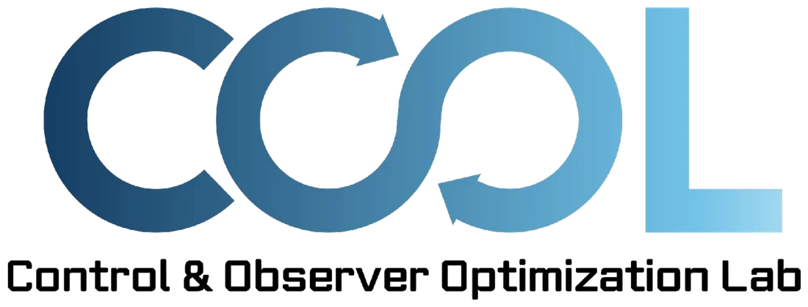
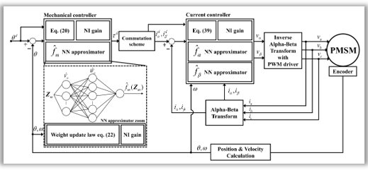
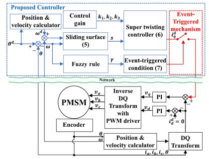
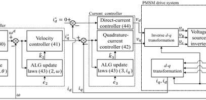
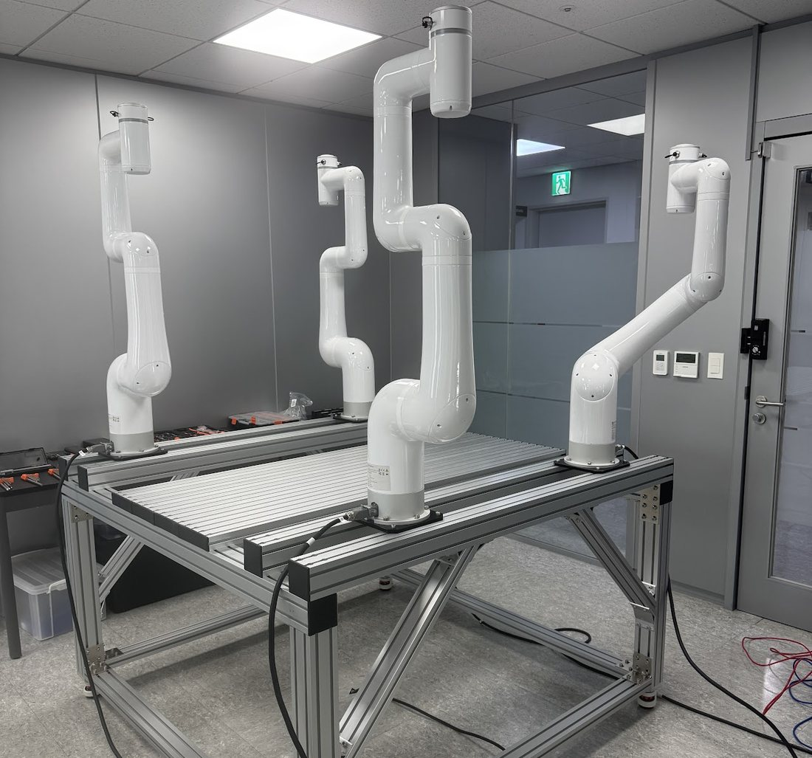
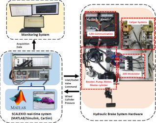
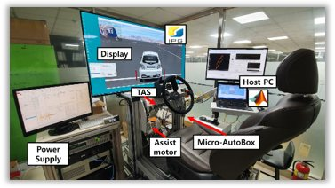
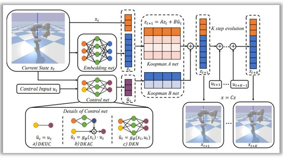
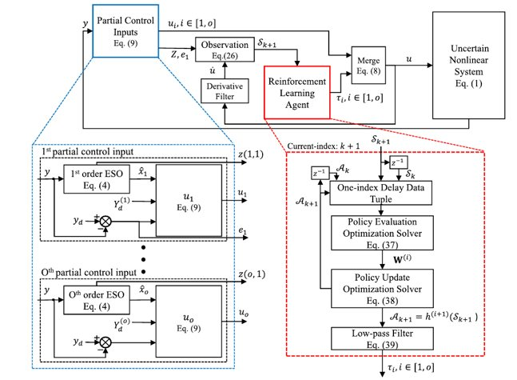
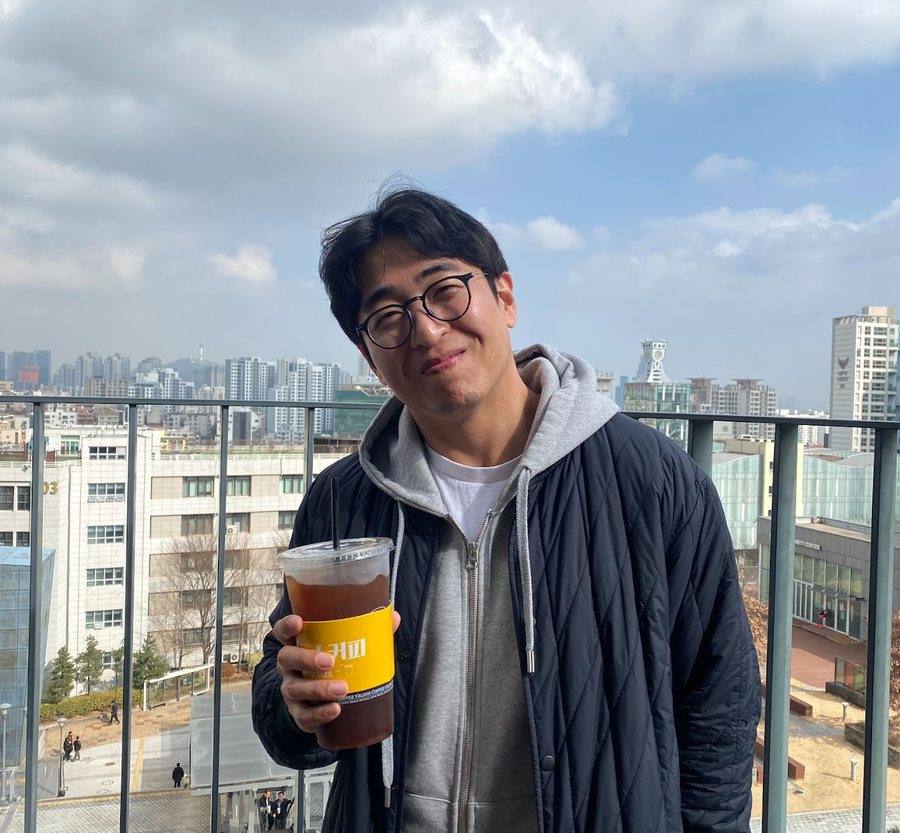

Advanced Control Theory
Robust Nonlinear Control and Data-driven Control Design for ensuring system stability under uncertainty.

Control & Observer Optimization Lab at Incheon National University. We design the “brain” of future mobility systems, from rigorous proofs to real-time hardware.
We are a team of passionate researchers (“COOL Guys”) dedicated to designing the “Brain” of future mobility systems.
Our mission is to bridge the gap between Advanced Control Theory and Real-world Applications. We integrate robust control strategies with embedded AI to create systems that are stable, intelligent, and optimal.
At COOL, we don’t just stop at simulations. We emphasize end-to-end validation, from rigorous mathematical proofs to real-time implementation on actual hardware platforms.
Robust Nonlinear Control and Data-driven Control Design for ensuring system stability under uncertainty.
Auto-learning-based control for Robotics, UAVs (Drones), and Defense Applications.
Light-weight AI (MLP-Mixer) and ESO-based Signal Augmentation on embedded systems for real-time processing.
Deep Koopman-based Model Predictive Control (MPC) and novel learning frameworks using Disturbance Observers.

Intelligent control for highly uncertain and nonlinear dynamic systems. Neural networks identify and compensate unknown dynamics, external disturbances and time-varying changes online, while Lyapunov theory guarantees the stability and safety of the whole closed loop.

Field-Oriented Control frameworks for precise torque and speed regulation of permanent magnet synchronous motors, with Disturbance Observers and Event-Triggered Control to reject load variations and cut computation and bandwidth.

Adaptive Learning Gain (ALG) algorithms for cascaded control systems. Update laws auto-tune control gains in real time to reach the desired tracking performance across trajectories, robust to unknown loads and parameter variations.

Low-level control of multi-DOF dual-arm cooperative manipulators: joint dynamics, precise torque regulation and high-frequency real-time execution, with robust impedance/admittance control for safe human-robot interaction, payload handling and collision avoidance.

Robust control of automotive hydraulic brakes, including ABS, validated on real brake hardware through Hardware-in-the-Loop Simulation with real-time targets (SCALEXIO) and MATLAB/Simulink, for slip regulation and stability on varied road friction.

Lateral dynamics and active steering on a dedicated steering simulator with rapid control prototyping (MicroAutoBox, CarSim): steering assist that improves feel, handling precision and lateral safety for autonomous driving.

Deep neural networks lift nonlinear dynamics into a linear latent space, so efficient linear MPC can run on originally intractable systems, enabling real-time optimal control and trajectory planning of robotic manipulators from purely data-driven models.

RL agents combined with Extended State Observers learn optimal policies for uncertain nonlinear systems while staying robust to unmodeled dynamics and disturbances, so AI-driven policies are safe and deployable on real hardware.

Director · Principal InvestigatorWe are actively recruiting highly motivated M.S./Ph.D. students and Undergraduate Interns. We value strong fundamentals in dynamics, mathematics, and programming skills (MATLAB/Python). Above all, we look for intellectual curiosity and grit to solve unsolved problems.
When you contact Prof. You, please share a short story of your persistence. It doesn’t have to be academic: reaching Diamond Tier in LoL, completing a 50 km march or a full marathon, a successful diet diary. Anything that shows your tenacity is welcome.
If you are passionate about Control, AI, and Future Mobility, join us and be COOL.
yousesun@inu.ac.krRoom 357, Building 8, Incheon National University